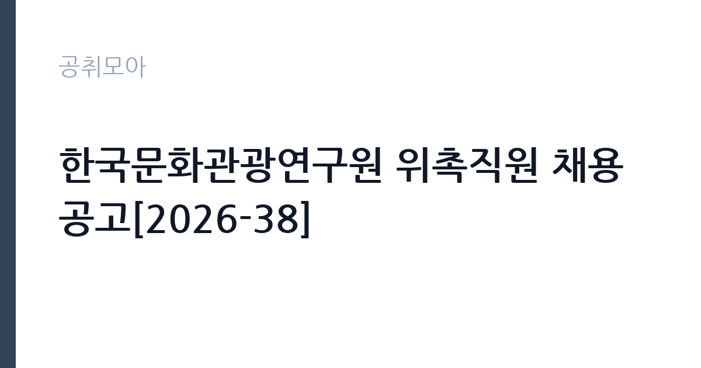

[공공기관] 한국문화관광연구원 위촉직원 채용 공고[2026-38]
한국문화관광연구원 · 서울 · 마감 2026-10-07 (D-14) · 출처 잡알리오

한눈에 보는 모집 조건
| 기관 | 한국문화관광연구원 |
|---|---|
| 공고명 | 한국문화관광연구원 위촉직원 채용 공고[2026-38] |
| 고용형태 | 기간제 |
| 근무지 | 서울 |
| 게시일 | 2026-09-23 |
| 마감일 | 2026-10-07 (D-14) |
지원자격, 이렇게 읽으세요
- 공공기관 채용공시
- 세부 조건은 원문 공고문 확인
공고문의 응시자격은 짧게 쓰여 있지만 실제로는 세 가지를 봅니다. 첫째 결격사유 해당 여부, 둘째 자격·경력의 직무 연관성, 셋째 근무 시작 가능일입니다. 셋 중 하나라도 애매하면 원문 공고문의 세부 조항을 먼저 확인하고 지원서를 쓰세요. 특히 한국문화관광연구원 공고는 기간제 전형이라 서류에서 직무 연관 키워드(공공기관)를 명시하는 게 유리합니다.
이 공고의 포인트
'' 조건을 눈여겨보세요. 이번 한국문화관광연구원 모집에서 '공공기관 채용공시' 항목이 사실상 1차 필터 역할을 합니다. 본인이 맞는다면 지원 우선순위를 맨 위로 올리고, 아니라면 비슷한 조건의 관련 공고 3개를 함께 검토해 차선을 마련해 두세요.
전형은 어떻게 진행되나
대부분 서류심사 후 면접심사 순으로 진행됩니다. 서류에서는 지원서·자기소개서의 직무 적합성을 보고, 면접에서는 실무 이해도와 근무 지속 가능성을 봅니다. 마감일(2026-10-07) 직전에는 접속이 몰려 원서 접수가 막히는 경우가 있으니 최소 하루 전 제출을 권합니다. 제출 후에는 접수번호·수험표 출력 여부를 반드시 확인하세요.
원문에서 확인한 전형 방식
ㅇ전공: *세부내용은 공고문 확인부탁드립니다. ㅇ임용자격 기준 관련 연구 분야 박사학위 취득 후 5년 이내인 자 또는 연수시작일 기준 3개월 이내 박사학위 취득예정자
위 내용은 한국문화관광연구원 원문 공고의 전형 항목을 그대로 옮긴 것입니다. 단계별 배수와 평가 요소가 적혀 있으니 본인 강점과 맞는 단계에 맞춰 준비 순서를 정하세요. 전형별 합격자 발표일도 원문에서 함께 확인하는 것이 좋습니다.
이런 분께 추천해요
- 서울 근무가 가능한 분 — 통근·거주 조건이 맞는지가 1순위입니다
- 기간제 전형을 찾는 분 — 공공기관 분야 관심자라면 우선 검토 대상입니다
- 마감(2026-10-07) 안에 서류를 낼 수 있는 분 — D-14이니 오늘 지원서 초안부터 잡으세요
지원 전 체크리스트
- 원문 공고문의 응시자격·결격사유 정독했는가
- 자격증·경력증명서 등 증빙 스캔 준비됐는가
- 마감일(2026-10-07) 전날까지 접수 가능한가
- 근무지(서울)·근무형태(기간제) 감당 가능한가
모집 일정과 제출 타이밍
이번 공고의 접수 기간은 2026-09-23부터 2026-10-07까지입니다. 남은 기간은 약 14일입니다. 서류 준비에 13일을 쓰고 마지막 하루는 접수·확인용으로 남겨두세요. 원서 접수는 시작일보다 마감일에 몰리는 구조라, 서버가 느려지는 마감 당일은 피하는 게 상책입니다. 권장 스케줄을 짜보면 첫째 날 공고문 정독과 지원자격 체크, 중간 날 자기소개서 작성과 증빙 준비, 마감 전날 접수 시스템 사전 입력입니다. 특히 한국문화관광연구원 채용은 마감 이후 추가 접수를 받지 않으니, 접수번호와 확인증 출력까지 마쳐야 비로소 지원 완료입니다.
직무 이해하기: 공공기관
공공기관 실무의 공통분모는 직무기술서와 성실성입니다. 채용 분야의 직무기술서를 내려받아 필요 역량을 자기소개서에 그대로 녹이세요. 공공 채용은 블라인드 전형이 많아 사진·학교·출신지를 가리는 대신 직무 연관 경험의 구체성이 당락을 가릅니다. 한국문화관광연구원의 이번 채용(기간제)도 같은 잣대로 보면 됩니다. 공고 제목에 적힌 분야명과 직무기술서의 필요역량을 나란히 놓고, 본인 경험에서 겹치는 키워드를 세 개 이상 뽑아보세요. 그 세 개가 자기소개서와 면접 답변의 뼈대가 됩니다.
자기소개서 작성 팁
자기소개서에서 평가자가 찾는 건 직무와의 연결고리입니다. 서두에 지원 분야(공공기관)를 택한 이유를 한 문장으로 밝히고, 이어서 수치로 증명되는 경험 두 가지를 구체적으로 서술하세요. 마무리는 입사 후 1년의 실행 계획으로 닫습니다. 한국문화관광연구원 지원자가 자주 놓치는 감점 포인트는 분야와 동떨어진 성장 배경 나열, 근거 없는 역량 주장, 마감일(2026-10-07) 착오입니다. 기간제 모집은 빠른 실무 적응이 관건이라 출근 가능 시점을 분명히 적는 것이 플러스가 됩니다.
면접 준비 포인트
면접관의 질문은 두 갈래입니다. 서류 내용의 사실 관계 확인, 그리고 우리 조직에 맞을지에 대한 판단입니다. 자소서의 핵심 경험 두 개를 1분 안에 설명하는 연습을 해두고, 한국문화관광연구원의 대표 사업 하나를 지원 분야(공공기관)와 엮은 답변을 준비해 가세요. 마무리 질문에서는 근무지(서울)와 기간제 근무가 가능하다는 뜻을 간결하게 전하는 게 좋습니다. 단정한 복장, 30분 전 도착, 결론 우선 답변이 기본 수칙입니다.
급여·근무조건 읽는 법
급여표를 볼 때는 기본급과 실수령액을 구분해야 합니다. 공고문 수치는 대개 기본급이라 수당·상여가 빠진 금액입니다. 기간제 모집에서는 계약 기간과 갱신 조건, 4대 보험·퇴직금 적용이 핵심 체크 항목입니다. 한국문화관광연구원 원문의 보수 규정을 펼치고, 근무지(서울)가 외곽이거나 야간·주말 근무가 있다면 주거·교통 지원 조항까지 확인한 뒤 지원서를 내세요.
자주 묻는 질문
- 마감일(2026-10-07)을 넘기면 지원할 수 있나요?
없습니다. 공공 채용은 마감 시각 이후 접수를 받지 않습니다. 시스템 마감 1시간 전에는 대기열이 길어지니 D-14을 보고 미리 제출하세요. - 서울 외 거주자도 지원 가능한가요?
공고에 거주 제한이 별도로 없으면 전국 지원이 가능합니다. 다만 일부 지자체·교육청 공고는 거주·이전 조건이 붙으니 원문 응시자격란을 확인하세요. - 기간제 전형에서 가장 중요한 서류는 무엇인가요?
직무 연관성을 보여주는 자기소개서와 증빙(자격증·경력증명서)입니다. 한국문화관광연구원 심사는 정량(자격·경력)과 정성(지원동기·직무이해)을 함께 봅니다.
함께 보면 좋은 공고
[공공기관] 2026년 PAO 인턴 채용 공고 — 마감 2026-10-08[공공기관] 한국노동연구원 기간제 행정원(보훈대상자 제한경쟁) 채용 공고(2026-6호) — 마감 2026-10-07[공공기관] (재)인천여성가족재단 아이사랑꿈터운영지원단 보육직5급(정규직) 공개경쟁채용 공고 — 마감 2026-10-08출처: 잡알리오 공개정보를 바탕으로 공취모아가 정리한 안내글입니다. 모집 조건·일정은 변경될 수 있으니 지원 전 반드시 원문 공고문을 확인하세요. 본 글은 정보 제공용이며 합격을 보장하지 않습니다.